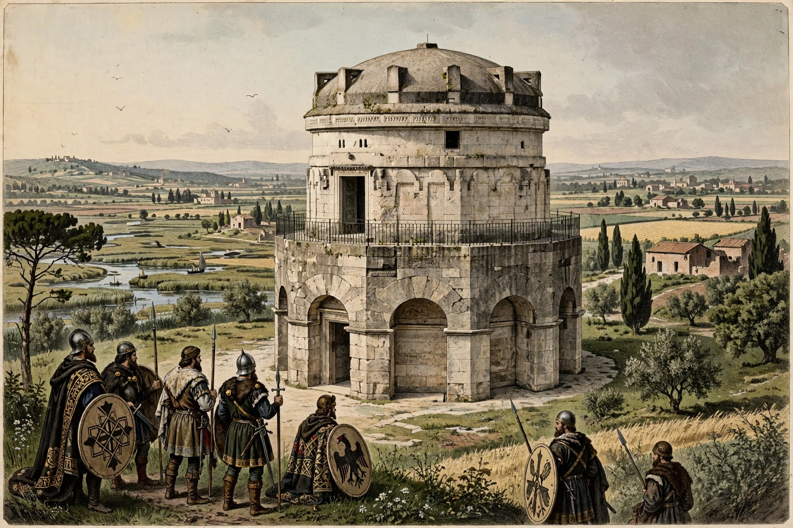

The Ostrogothic Kingdom was the kingdom established by the Ostrogoths in Italy and neighbouring regions from 493, when Theodoric the Great killed Odoacer, until Byzantine reconquest in 553.
Theodoric preserved Roman administration, law, and senatorial culture while Goths formed the military elite; Arian Goths and Catholic Romans coexisted uneasily. Ravenna flourished with building including Theodoric's mausoleum and the Arian Baptistery. His succession crisis after 526, and execution of Boethius, darkened the reign's end.
Justinian's generals Belisarius and Narses waged the devastating Gothic War (535–554). After Totila's revival, the last king Teia fell in 552–553, and Italy passed to the Byzantine Empire, soon to lose much of it to the Lombards.